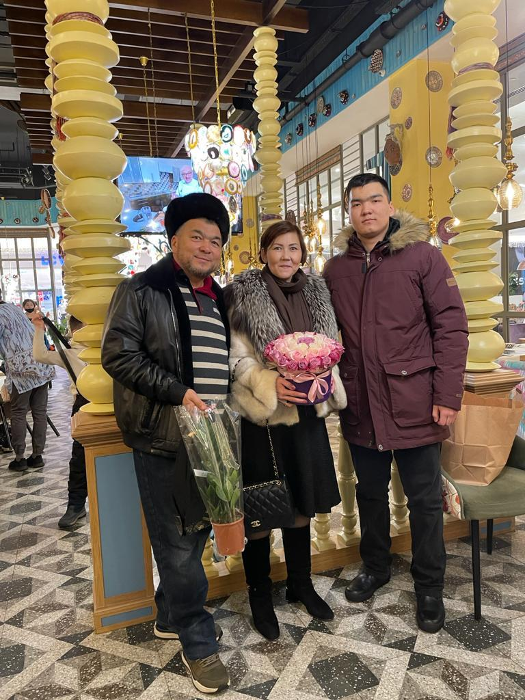
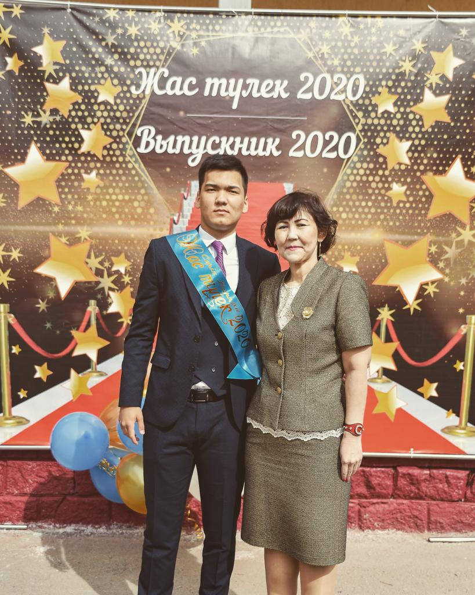
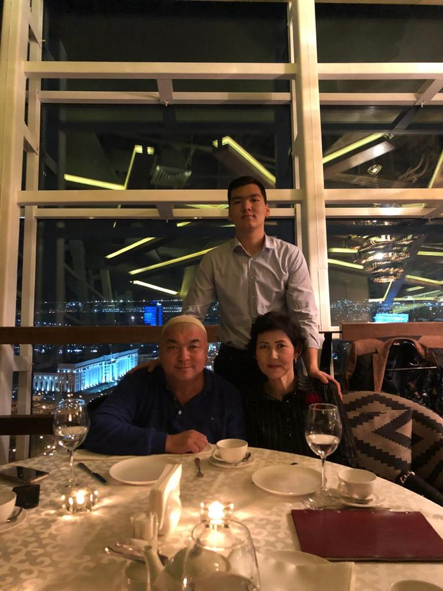
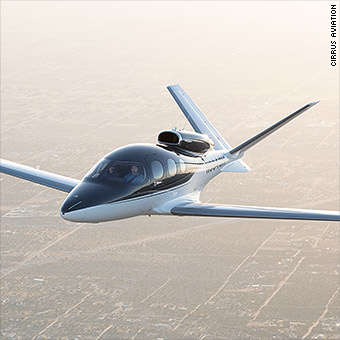
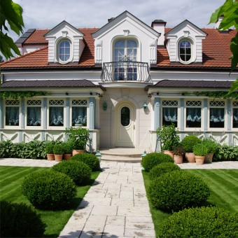

My name is Serik Darkan Serikuly, I was born on January 11, in 2004 in the city of Atyrau. I am a 1-st year student at Astana IT University. There are 3 people in our
family. Mom's name is Ainur. Dad's name is Serik. I have been living in Nur-Sultan since 2013. And in 2013 we moved to Nur-Sultan. We didn't know what to do. But we believed that we would succeed. And right now, I can proudly
say that we have succeeded, and will still succeed. And I want to tell you about myself in detail. First, about my family. I am the only son at home.
My Family



As you can see, there are three of us in the family. And I think this is more of a difference than a disadvantage. First of all, it is good for me that I am an only child in the family, others think so. But I certainly think the opposite. I
would
be glad if there was another child in my family. I would be even more glad if it was my sister. Well, or was there an older brother. It's great when you have someone to rely on. Another difference between our family and others is age. We have
very different ages. Dad is 55, mom is 47, and I am 17. Why do you think there is such a difference in age: Because dad was in no hurry to get married. Mom was in no hurry either. But the most interesting thing is that they met for about 3
months
and got married right away. Then Dad was a fisherman and earned good money. And my mother studied. In her youth, she studied and worked. But of course, I studied on the bigger side. And they were introduced, their mutual friend. It all started
with this. They got married in 2002 and got engaged near the Caspian Sea. I was born in 2004. Dad was very happy when I was born. He celebrated 40 days as they say. But there was one thing. I was not born completely healthy. But luckily, I
recovered with the help of doctors and my parents. And so the years passed. We lived in the city of Atyrau. And in the end. I may have a small family, but with a big soul. I love my family.
My similarities in the zodiac sign:
Alarmist
Competition
Stubborn
Straightforwardness
I am a Capricorn by my zodiac sign.Capricorn is meticulous, smart, active.
A sign of the earthly element, Capricorn has the gift of not losing sight of the main goal and living for a long time.
Purposefulness, endurance in difficulties, responsibility - these are the strong qualities of the representatives of this sign.
Capricorn is not afraid of loneliness, is ready to endure any everyday difficulties, to overcome any obstacles.
Let's start about my hobby.
Sometimes I don't have time for hobbies.
Because of this, I love my hobby in my free time.
My hobbies:
Driving a car
Meeting with my
friends
Dancing
Listening music
Watching movie
Reading a book
My favorite film:
The Man From U.N.C.L.E.
Plot
The early 1960s, the height of the Cold War. In the center of the film, CIA agent Napoleon Solo and KGB officer Ilya Kuryakin. Having forcibly discarded hostility, they unite for a joint mission - to stop the international criminal
neo-fascist
organization that seeks to destabilize the fragile balance of power through the proliferation of nuclear weapons and technology. The only clue to the duo is Gabi, the daughter of a missing German scientist, who holds the key to infiltrating
the
criminal organization.
They must find him and prevent a global catastrophe.
This is a trailer: If you want to watch a movie, click on the link or click ALT + H: Full Movie
My favorite music:
Wu-Kang
My achievements:
№
Year
Object name
Level
Results
1.
2018
Olympiad in Biology
Republican
3rd place
2.
2019
Physics Olympiad
Republican
2nd place
3.
2020
Mathematics and Mechanics Olyampid
International
didn't take
I have 3 achievements.
Which I have achieved myself.
But all the same, I could not do without the help of teachers. I received 1 achievement in 2018 in the 9th grade.
It was a biology Olympiad. I will not say that it was easy. But I think I did it well. I got 2 achievements in the 10th grade.
And then I decided not to give up and go all the way. And I took part in the international Olympiad.
And then it did not work to take a seat. Well, it seems not so, and I'm really smart.
Yes, my achievements are few, but they are.
My grades:
For the 2nd trimester:
My dreams:

Personal plane

Huge house
Bugatti chiron
Personal plane
An aircraft heavier than air,
designed to fly in the atmosphere with the help of a propulsion system that creates thrust and
a wing stationary relative to other parts of the wing apparatus that creates lift.
Price = from $ 15000 to $ 90 million
Huge house
A house is a single-unit residential building,
which may range in complexity from a rudimentary hut to a complex structure of wood, masonry,
concrete or other material, outfitted with plumbing, electrical, and heating, ventilation,
and air conditioning systems.
Price = from $ 150000 to ∞
Bugatti chiron
Hypercar of the Bugatti company (part of the Volkswagen AG concern), officially presented to the public in 2016.
The model was named in honor of race car driver Louis-Alexander Chiron, who competed for the brand from 1928 to 1958.
Price = € 2.5 million
For more details:
I've had these dreams since childhood. I started dreaming at the age of 7. Well, of course, there were no such global dreams. But still there were. At first I dreamed about my bike.
I loved to ride my bike. Then they bought me a bike at 8. I was very happy. After that, I began to believe that dreams come true. After that, I started dreaming more and more.
And finally, I found my widest dream. And now you see 3 of my global dreams.
Huge house:
I dream of a huge house because my family lived only in apartments, that is, they rented, just recently bought an apartment. But I would still like to build the house myself.
So that at first the parents were comfortable living. From the second, so that guests can come, and that there is always enough space for them.
Bugatti chiron:
I love cars since childhood, but I love fast cars even more. At first I dreamed of Toyota, Lexus. But right now I realized that this is too flickering a dream.
And changed my dream to a bugatti. It seems not achievable, but there are people who buy. So anything is possible.
Personal plane:
The plane is a separate verse. I do not know why, I have such a feeling that I will have my own private plane.
And this is not the first. I want a private jet so I don't have to be tied to airline companies. So that at any time, he wanted, sat down, flew.